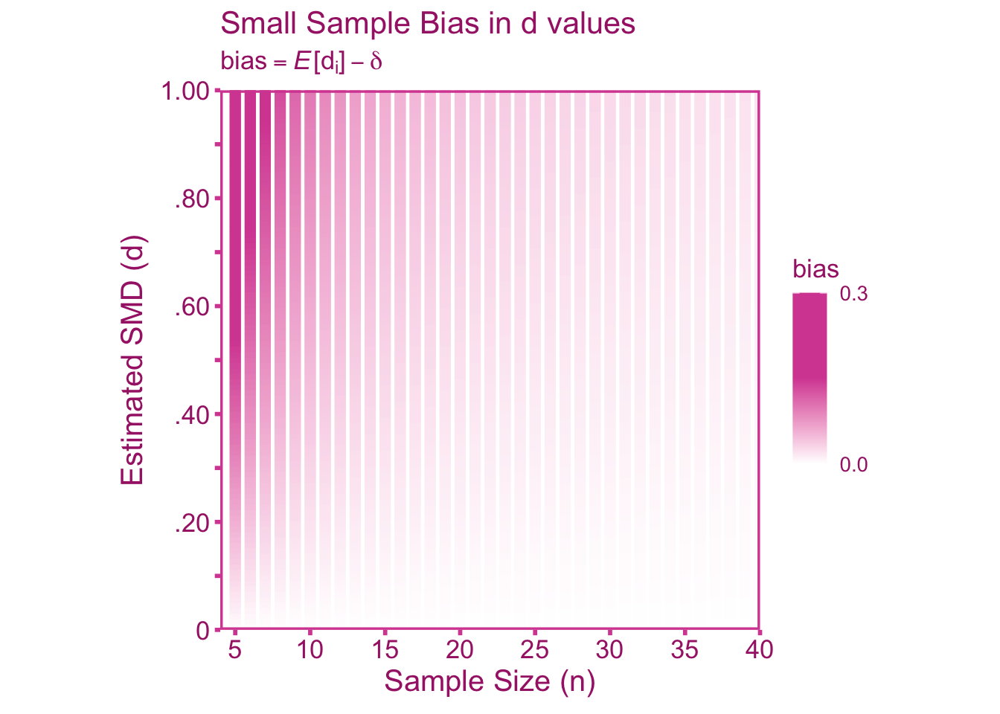
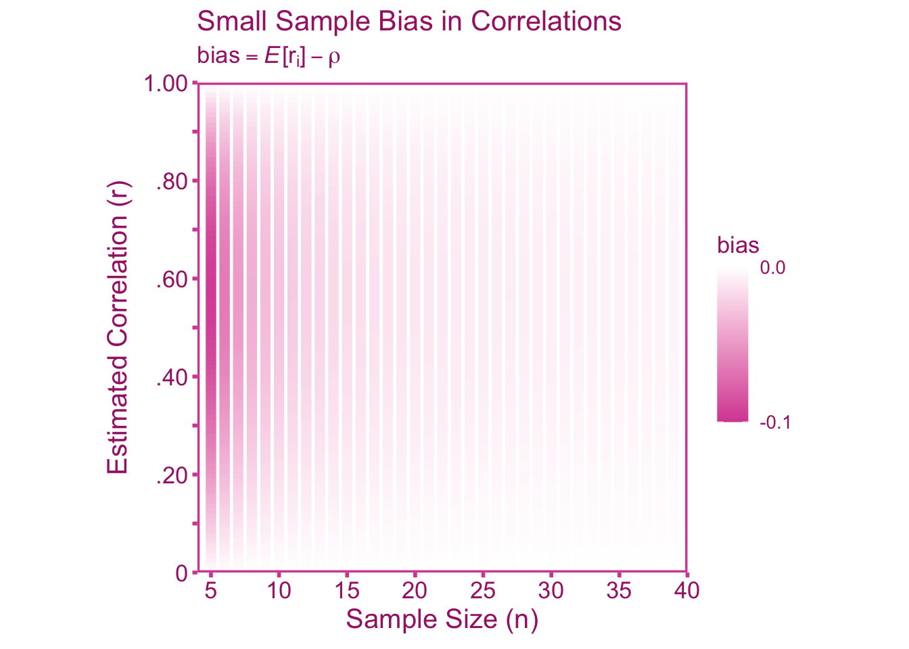

4 Small Samples
4.1 Introduction
The purpose of sample statistics is to draw meaningful inferences about the population. However, effect size estimators such as Pearson’s correlation coefficient and Cohen’s \(d\) are biased in small sample sizes. This small sample bias is an artifact and can be adjusted with the appropriate correction factor.
4.2 When Correcting alongside other Artifacts
The small sample bias should always be corrected for prior to applying any other artifact correction. It is independent of all other artifact corrections and therefore the corrected effect sizes in this section can be treated as the uncorrected effect sizes in other sections.
4.3 Correcting Standardized Mean Differences for Small Sample Bias
4.3.1 Defining the Target Quantity
Our quantity of interest is the population standardized mean difference, \(\delta\), between groups \(A\) and \(B\). We can model the relationship between the population standardized mean difference and the estimate (\(d\)),
\[ d = a\delta+e. \]
Where \(a\) is an attenuation/inflation factor and \(e\) is our sampling error term. Ultimately, we can obtain an unbiased estimate of the population standardized mean difference by correcting the sample standardized mean difference as follows,
\[ d_c = \frac{d}{\hat{a}}. \]
4.3.2 Artifact Correction for d
As the sample size approaches infinity, Cohen’s estimator of the standardized mean difference is unbiased (Hedges 1981; Cohen 2013). However, in small sample sizes Cohen’s estimator is inflated, that is, on average, it overestimates the population standardized mean difference. To see why this is the case, we can first define the population standardized mean difference between group \(A\) and group \(B\) such that,
\[ \delta = \frac{\mu_A-\mu_B}{\sigma}. \]
Where \(\bar{y}_A\) and \(\bar{y}_B\) are the observed arithmetic means of group \(A\) and group \(B\), respectively. A sample estimate of the standardized mean difference is,
\[ d = \frac{\overline{Y}_A-\overline{Y}_B}{S_p} \tag{4.1}\]
Where \(S_p\) is the pooled standard deviation (i.e., weighted average within-group standard deviation). The estimator, \(d\), is an asymptotically unbiased estimate of \(\delta\). We can denote this asymptotic relationship as,
\[ \mathbb{E}_i[d_i] \overset{_n}{\asymp} \delta. \]
However, \(d\) is a biased estimator of \(\delta\) when the sample size is finite. Particularly, the smaller the sample size, the larger the bias. We can see that in Figure 4.1, \(d\) tends to over-estimate \(\delta\). Therefore, we can apply an artifact inflation factor, \(a\), to capture this over-estimation,
\[ \mathbb{E}_i[d_i] = a\delta. \]
The reason for this bias in \(d\) values is two-fold:
- Standard deviations tend to be attenuated in small sample sizes. This is due to the fact that although variance (squared standard deviation) is an unbiased estimator of the population variance, the square root of the variance (i.e., the standard deviation, \(S_p\)) is a biased estimate of the population standard deviation (\(\mathbb{E}_i[\sqrt{S_{p_i}}] \neq \sqrt{\sigma}\), Holtzman 1950).
- A ratio is biased in small sample sizes (Kempen and Vliet 2000), therefore the ratio between the mean difference and the standard deviation (see Equation 4.1) will likewise be biased.
To obtain an unbiased estimate of the population standardized mean difference, we need to first estimate the artifact inflation factor, \(a\). In this case, the artifact inflation factor has been mathematically derived previously by Hedges (1989). For other types of artifacts, \(a\) is unknown in practice and must be estimated, however, for small sample bias the exact value of \(a\) is known. The precise value of \(a\) is a function of sample size (equation 6e, Hedges 1989),
\[ a = \frac{\Gamma\left(\frac{n-3}{2}\right)\sqrt{\frac{n-2}{2}}}{\Gamma\left(\frac{n-2}{2}\right)}. \] Where \(\Gamma(\cdot)\) denotes the gamma function. The gamma function is factorial function generalized to non-integers (note that a factorial function on integers would look something like: \(3! = 3 \cdot 2 \cdot 1\), Taboga 2021). There is also an approximation of \(a\) that is more computationally trivial (re-arrangement of the first formula on pp. 114, Hedges 1989):
\[ a \approx \frac{4n-9}{4n-12} \]
However, with the advent of computers, this approximation formula is unnecessary. We can see in Figure 4.2 that there is notable bias when sample size is below 20. Furthermore, the bias is most pronounced when the sample \(d\) value is larger (there is no bias at \(d=0\)).
Using \(a\), we can correct the \(d\) value such that,
\[ d_c = \frac{d}{a} = \frac{d}{ \left[\frac{\Gamma\left(\frac{n-3}{2}\right)\sqrt{\frac{n-2}{2}}}{\Gamma\left(\frac{n-2}{2}\right)}\right]}. \tag{4.2}\]
To obtain the standard error of \(d_c\) we can apply the same correction as above to the standard error of \(d\) (\(se\)),
\[ se(d_c) = \frac{se(d)}{a} = \frac{se(d)}{ \left[\frac{\Gamma\left(\frac{n-3}{2}\right)\sqrt{\frac{n-2}{2}}}{\Gamma\left(\frac{n-2}{2}\right)}\right]}. \tag{4.3}\]
4.4 Correcting for Small Sample Bias in Correlations
4.4.1 Defining the Estimand
Our quantity of interest is the population correlation, \(\rho\). We can model the relationship between the population correlation and our sample estimate (\(r\)) with,
\[ r = a\rho+e \]
Where \(a\) is our small sample biasing factor and \(e\) is our sampling error term. Ultimately, we can obtain an unbiased estimate of the population correlation by correcting the observed correlation as follows,
\[ r_c = \frac{r}{a} \]
4.4.2 Artifact Correction for r
Let’s first define the correlation in the population as the covariance between \(X\) and \(Y\) (\(\sigma_{XY}\)) standardized by the product of the standard deviation of \(X\) (\(\sigma_X\)) and \(Y\) (\(\sigma_Y\)):
\[ \rho = \frac{\sigma_{XY}}{\sigma_{X}\sigma_Y} \]
The sample estimate can be defined as (\(S\) denoting the sample estimates of \(\sigma\)),
\[ r = \frac{S_{XY}}{S_{X}S_Y} \]
Asymptotically, the expectation of a sample correlation is equal to the population correlation,
\[ \mathbb{E}_i[r_i] \overset{_n}{\asymp} \rho. \]
However, similar to standardized mean differences, correlations are also biased in small sample sizes (Olkin and Pratt 1958). Unlike standardized mean differences, Pearson correlations are under-estimated, rather than over-estimated. Therefore, an artifact attenuation factor, \(a\), can account for this bias,
\[ \mathbb{E}_i[r_i] = a\rho. \]
Because the attenuation factor, \(a\), has been mathematically derived directly Olkin and Pratt (equation 2.3, 1958), there is no need to obtain a noisy estimate of \(a\). Therefore \(a\) can be defined exactly as,
\[ a = \frac{1}{F\left(\frac{1}{2},\frac{1}{2};\frac{n-1}{2};1-r^2\right)} \tag{4.4}\]
Where \(F(\cdot)\) is the hypergeometric function (for background see the Wikipedia page: ). The hypergeometric function is a complicated and iterative function which which can be defined in terms of \(\Gamma(\cdot)\) functions (plugging in values into equation 2.2, Olkin and Pratt 1958)
\[ F\left(\frac{1}{2},\frac{1}{2};\frac{n-1}{2};1-r^2\right) = \sum^{\infty}_{z=0} \frac{\Gamma\left(\frac{1}{2} + z\right)\Gamma\left(\frac{n-1}{2}\right)\left(1-r^2\right)^z}{\Gamma\left(\frac{1}{2}\right)\Gamma\left(\frac{n-1}{2}+z\right)z!} \]
Although this formula is complex, it can be easily done in R so do not worry! There is also an approximation of \(a\) that is much simpler than Equation 4.4,
\[ a \approx \frac{2(n-3)}{2n-r^2-5} \]
Then we can correct the point-estimate the sampling variance for small sample bias. I will emphasize that approximations are not necessary if a computer is available. We can see in Figure 4.2 that there is notable bias when sample size is below 15. Furthermore, the bias is most pronounced when the sample correlation around .60 (there is no bias at \(r=0\) and \(r=\pm 1\)).

To correct for small sample bias, we can divide the sample correlation \(r\) by the attenuation factor \(a\),
\[ r_c = \frac{r}{a} = \frac{r}{\left[\frac{1}{F\left(\frac{1}{2},\frac{1}{2};\frac{n-1}{2};1-r^2\right)}\right]} \tag{4.5}\]
Where the standard error of \(r_c\) can be obtained by correcting the observed standard error (\(se\)),
\[ se(r_c) = \frac{se(r)}{a} = \frac{se(r)}{\left[\frac{1}{F\left(\frac{1}{2},\frac{1}{2};\frac{n-1}{2};1-r^2\right)}\right]} \tag{4.6}\]